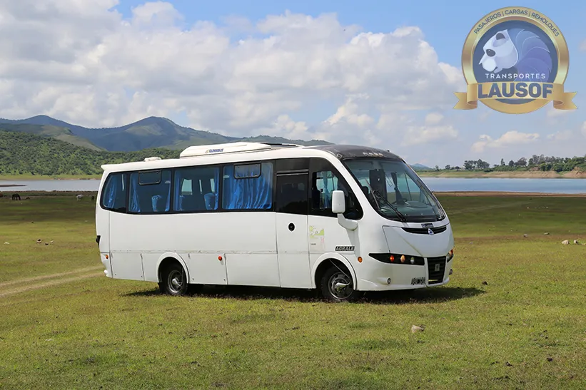

Combi a la Serenata a Cafayate, con la vuelta a Salta al terminar la noche
El grupo sale de Salta en una combi de 19+1 plazas con chofer profesional, el chofer espera en Cafayate durante el festival y la vuelta arranca cuando el grupo lo acuerda, aunque la noche termine de madrugada.
Serenata 2027
Las tres noches de la Serenata a Cafayate 2027
La 53.ª edición es de jueves a sábado. No cae en fin de semana largo, por eso muchos grupos de Salta van y vuelven en la misma noche.
-
Primera nocheCafayate · predio y grilla todavía sin anunciarCotizar la combi →
-
Segunda nocheCafayate · predio y grilla todavía sin anunciarCotizar la combi →
-
Noche de cierreCafayate · predio y grilla todavía sin anunciarCotizar la combi →
Fechas anteriores
Lausof SRL es una empresa de transporte independiente. No organiza la Serenata a Cafayate ni vende entradas: las entradas, el predio y la grilla se confirman en los canales de la organización (@serenatacafayate). En 2026 las entradas se vendieron sólo por Autoentrada, según la Secretaría de Cultura de Salta, y la edición se hizo en el predio de la Bodega Encantada. Fechas 2027 verificadas el 10/10/2026 en el anuncio de la organización publicado por Radio Cafayate (28/09/2026).
La ruta
Salta–Cafayate por la RN 68 y la Quebrada de las Conchas
189 km por la RN 68, pasando por Cerrillos, El Carril, Coronel Moldes, La Viña y Alemania. Unas 2 h 20 de manejo en auto (tiempo aproximado); en combi y de noche, más.
Los últimos 83 km antes de Cafayate atraviesan el Área Protegida Quebrada de las Conchas: Los Castillos, El Obelisco, La Yesera, El Sapo, el Anfiteatro y la Garganta del Diablo quedan sobre la ruta. A la ida, si la salida es temprano, se puede parar en algún mirador; a la vuelta, de madrugada, se viaja sin paradas.
El viernes 27 de febrero de 2026, segunda noche de la Serenata, la RN 68 quedó cortada por un derrumbe entre los kilómetros 23 y 27, entre Los Castillos y La Yesera (El Confidente). Antes de cada salida revisamos el estado de la ruta y, si hay un corte, lo avisamos al grupo por el chat.
La vuelta
Volver de madrugada sin que nadie del grupo maneje
Las noches de la Serenata suelen terminar de madrugada. Volver a Salta manejando después de un festival largo es lo que este viaje evita.
La combi queda en Cafayate durante la noche y el regreso arranca a la hora que el grupo acordó antes de salir, o cuando termina el último artista que quieren ver.
Ida y vuelta en la misma noche, o la unidad a disposición las tres noches si el grupo se queda en Cafayate.
El punto y la hora de la vuelta quedan escritos en el chat. Si alguien se demora, el grupo avisa por el mismo WhatsApp.
La combi deja a cada pasajero en el punto acordado en Salta, o en varios puntos si el grupo lo pide al cotizar.
El grupo y la unidad
Combis 19+1 con chofer profesional
Diecinueve pasajeros más el chofer. Si el grupo es más grande, cotizamos más de una unidad. El abrigo para la madrugada puede quedar en la combi durante la noche.


Cómo reservar
Lo que necesitamos para cotizar
Cuatro datos: qué noche o noches, cuántos viajan, desde dónde salen en Salta y si vuelven en la noche o se quedan en Cafayate. Respondemos con la cotización de la combi completa y, si el grupo confirma, dejamos escritos en el chat el punto y la hora de salida y de vuelta.
Si reserva un club, una empresa o una institución, emitimos factura A — somos Lausof S.R.L., CUIT 30-71146774-9.
Preguntas frecuentes
Lo que nos preguntan sobre la Serenata
¿Podemos ir una noche y volver en la misma noche?
Sí: salida desde Salta por la tarde, el chofer espera en Cafayate y la vuelta arranca a la hora acordada. Se llega a Salta de madrugada.
¿Y si nos quedamos las tres noches en Cafayate?
La unidad puede quedar a disposición del grupo: hace los traslados entre el alojamiento y el predio cada noche y vuelve a Salta el último día.
¿Dónde es la Serenata 2027?
En Cafayate. El predio de 2027 todavía no se anunció; en 2026 se hizo en el predio de la Bodega Encantada. Cuando la organización lo confirme, lo sumamos en esta página.
¿Venden entradas?
No. Hacemos sólo el transporte. Las entradas se compran en el canal que anuncie la organización.
¿Cuánto cuesta?
Depende de la noche, de la espera y de si la unidad queda a disposición. Con esos datos cotizamos la combi completa y el grupo reparte el costo como quiera. Las preguntas generales sobre el servicio están en recitales y festivales.
Quiénes somos
Lausof SRL es una empresa familiar de transporte de Salta. Hacemos transporte de pasajeros desde 2010, con habilitación CNRT N.º 60284. La empresa →
- Feriados y fines de semana largos
- Recitales y festivales
- Carnaval de la Quebrada
- Traslado Salta – Cafayate
- Turismo en Salta y Jujuy
Actualizado el . Próxima edición: Serenata 2027, con fechas publicadas; predio y grilla sin anunciar.
¿El grupo ya eligió la noche?
Con la noche, la cantidad de pasajeros y el punto de salida respondemos con la cotización en el día.